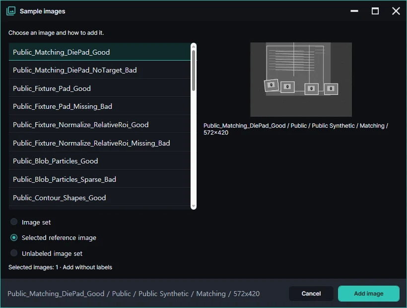

01
2D Workbench
Build and validate rule-based 2D inspection Recipes on Windows with OpenCvSharp 4 and C#.


Configure Tools and review their results
Compare chained preprocessing steps
Compare Filter, Threshold, Morphology, Blob and Contour results
Browse the public sample catalog
- Teach inspection Tools through PropertyGrid parameters, ROIs and acceptance limits.
- Connect Tools in a Pipeline and save the Steps, parameters and Layer connections as Recipe XML.
- Compare source, intermediate and output Layers, detection drawings, measurements and OK/NG reasons.
- Check the same Recipe against Good and Bad samples with Batch inspection.
- Usable
- Source version
v2.2.0-dev.12 - Apache-2.0
- machine-vision
- opencvsharp4
- blob-detection
- pattern-matching
Get it Download the win-x64 ZIP from Releases. It requires the .NET 8 Desktop Runtime (x64). The published ZIP is v2.1.0-rc.3; it predates the source workflow shown here.